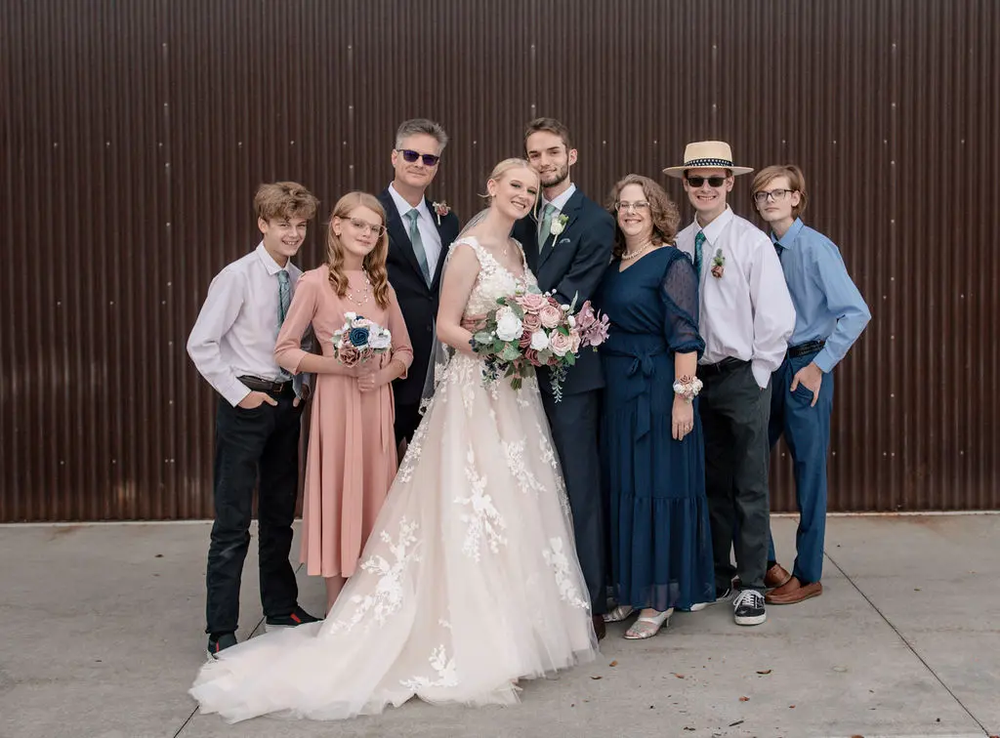

Anna Abbott | WDD 130
Hi, I'm Anna. That's me in the blue dress, between the groom and the young man in the hat. Two years ago my family and I moved to Texas, and I enjoy the experiences of life here: feeling the Gulf water splash over my feet, listening to the hum of the cicadas in the summer, watching the thunderstorms roll across the Texas sky. I like hearing the small talk of the Bible Belt, where strangers are happy to discuss how they found Jesus and wish me a blessed day.